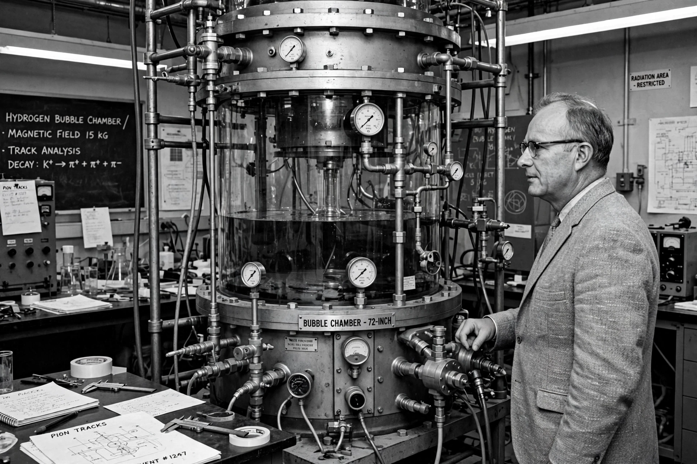

| Born | June 13, 1911, San Francisco, California, U.S. |
|---|---|
| Died | September 1, 1988 (aged 77), Berkeley, California, U.S. |
| Education | University of Chicago (BS, MS, PhD) |
| Known for | Bubble chamber, Alvarez hypothesis, cosmic ray studies |
| Awards | Nobel Prize in Physics (1968) |
| Children | Walter Alvarez (geologist) |

Luis Walter Alvarez (June 13, 1911 – September 1, 1988) was an American experimental physicist, inventor, and professor who was awarded the Nobel Prize in Physics in 1968 for the development of the hydrogen bubble chamber and the discovery of resonance states in particle physics. Late in his career he co-proposed the impact hypothesis for the Cretaceous–Paleogene extinction.
Alvarez was born in San Francisco, the son of physician and medical researcher Walter C. Alvarez. He studied at the University of Chicago, earning his PhD in 1936 under Arthur Compton, then joined Ernest Lawrence's Radiation Laboratory at Berkeley.
Alvarez worked on the cyclotron, discovered electron capture (1937), and measured the magnetic moment of the neutron with Felix Bloch. During the Second World War he worked at MIT's Radiation Laboratory on radar — including the Ground Controlled Approach landing system — and at Los Alamos on the Manhattan Project, where he designed detonators and flew on the observation plane accompanying the Enola Gay. His development of the liquid hydrogen bubble chamber in the 1950s enabled the discovery of many short-lived particle resonances, earning the 1968 Nobel Prize.
In 1980, Alvarez, his son geologist Walter Alvarez, and chemists Frank Asaro and Helen Michel published the hypothesis that an asteroid impact caused the end-Cretaceous mass extinction, based on an anomalous enrichment of iridium in the boundary clay layer at Gubbio, Italy. The predicted impact site was found a decade later at the Chicxulub crater in Mexico, and the hypothesis is now the scientific consensus.
Alvarez also investigated the Egyptian pyramids with cosmic-ray muons, analyzed the Zapruder film of the Kennedy assassination, and held numerous patents.
From Wikipedia, the free encyclopedia. Recreated from memory.